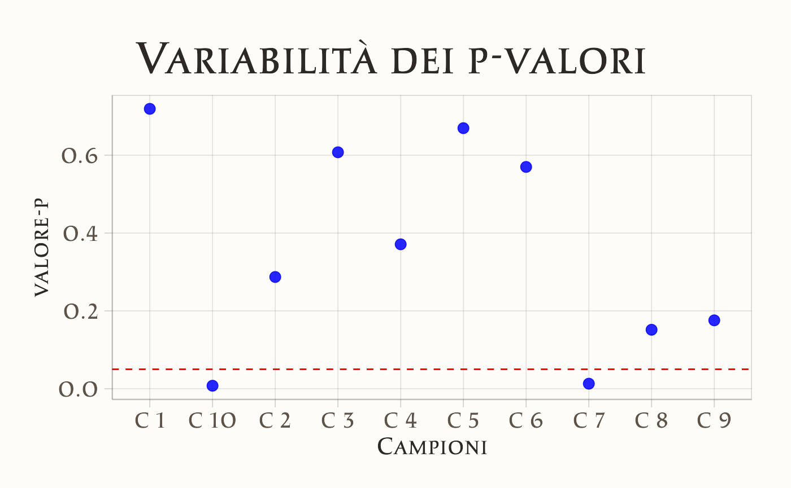

80 La fragilità del p-valore
- verificare quanto il p-valore varia da campione a campione.
- Leggere il seguente post sul blog di Andrew Gelman.
80.1 Introduzione
Il codice seguente è ispirato da un post sul blog di Andrew Gelman.
80.2 Simulazione
La seguente simulazione ha l’obiettivo di mostrare quanto i p-valori possano essere “fragili†e variare notevolmente da campione a campione, anche quando i dati provengono da una distribuzione con parametri molto simili. Questo serve a dimostrare che il p-valore, spesso usato per determinare la significatività statistica di un effetto, può essere influenzato pesantemente dalla variabilità campionaria, soprattutto in campioni di piccole dimensioni o con effetti deboli. Gelman esprime questo concetto dicendo che
the difference between “significant†and “not significant†is not itself statistically significant.
80.2.1 Logica della Simulazione
-
Obiettivo:
- Dimostrare la variabilità dei p-valori calcolati per diversi campioni estratti da una popolazione con una media molto vicina a zero.
- Mostrare come, nonostante l’effetto vero sia piccolo, i p-valori possano essere significativamente diversi tra loro, a seconda della variabilità e delle dimensioni del campione.
-
Setup della Simulazione:
- Generiamo \(J = 10\) campioni indipendenti, ognuno con un numero ridotto di osservazioni (\(n = 10\)), per massimizzare la variabilità dei risultati.
- Ogni campione è generato da una distribuzione normale con una media vera di \(\mu = 0.05\) e una deviazione standard di \(\sigma = 0.1\). Questi parametri sono scelti per rendere la media dei campioni vicina a zero e, al tempo stesso, abbastanza variabile.
-
Calcolo della media campionaria:
- Per ciascun campione, calcoliamo la media (\(\hat{\mu}\)) e la deviazione standard (\(\hat{\sigma}\)).
- La media del campione (\(\hat{\mu}\)) è utilizzata come stima del parametro.
-
Calcolo del p-valore:
Applichiamo un t-test per ciascun campione per verificare l’ipotesi nulla (\(H_0\)) che la media del campione sia zero.
-
Il p-valore viene calcolato utilizzando la formula classica del t-test:
\[ t = \frac{\hat{\mu}}{\frac{\hat{\sigma}}{\sqrt{n}}} \]
dove:
- \(\hat{\mu}\) è la media del campione,
- \(\hat{\sigma}\) è la deviazione standard del campione,
- \(n\) è il numero di osservazioni per campione.
-
Successivamente, il p-valore è calcolato come:
\[ \text{p-value} = 2 \times (1 - \text{CDF}(|t|)) \]
dove \(\text{CDF}\) è la funzione cumulativa della distribuzione t con \(n-1\) gradi di libertà .
80.2.2 Descrizione della Sintassi
Il codice R è strutturato come segue:
- Generazione dei campioni:
- Creiamo una lista di campioni (10 campioni in totale), ognuno con 10 osservazioni, utilizzando la distribuzione normale con media 0.05 e deviazione standard 0.1.
-
Calcolo delle medie e dei p-valori:
- Iteriamo su ciascun campione per calcolare la media (\(\hat{\mu}\)) e la deviazione standard (\(\hat{\sigma}\)).
- Calcoliamo il valore statistico \(t\) e il corrispondente p-valore utilizzando la distribuzione t.
-
Stampa dei risultati:
- I p-valori vengono arrotondati e stampati per osservare quanto siano variabili.
# Imposta il seme per riproducibilitÃ
set.seed(1234)
# Parametri della simulazione
J <- 10 # Numero di campioni indipendenti
n <- 10 # Numero di osservazioni per campione
true_mean <- 0.05 # Media vera della popolazione
true_sd <- 0.1 # Deviazione standard della popolazione
# Genera i campioni casuali
samples <- replicate(J, rnorm(n, mean = true_mean, sd = true_sd), simplify = FALSE)
# Calcola statistiche campionarie e p-valori
results <- lapply(samples, function(sample) {
sample_mean <- mean(sample) # Media campionaria
sample_sd <- sd(sample) # Deviazione standard campionaria
t_statistic <- sample_mean / (sample_sd / sqrt(n)) # Statistica t
p_value <- 2 * (1 - pt(abs(t_statistic), df = n - 1)) # p-valore bilaterale
list(mean = sample_mean, sd = sample_sd, t = t_statistic, p_value = p_value)
})
# Converti i risultati in un data frame per facilitarne la visualizzazione
results_df <- do.call(rbind, lapply(results, as.data.frame))
rownames(results_df) <- paste("C", 1:J)
# Visualizza i risultati
print(results_df)
#> mean sd t p_value
#> C 1 0.0117 0.0996 0.371 0.71918
#> C 2 0.0382 0.1067 1.131 0.28718
#> C 3 0.0112 0.0666 0.532 0.60758
#> C 4 -0.0266 0.0894 -0.941 0.37112
#> C 5 -0.0110 0.0787 -0.441 0.66955
#> C 6 0.0221 0.1186 0.590 0.56994
#> C 7 0.1117 0.1144 3.086 0.01301
#> C 8 0.0458 0.0924 1.567 0.15157
#> C 9 0.0342 0.0735 1.470 0.17575
#> C 10 0.1061 0.0984 3.409 0.00776ggplot(results_df, aes(x = rownames(results_df), y = p_value)) +
geom_point(size = 3, color = "blue") +
geom_hline(yintercept = 0.05, linetype = "dashed", color = "red") +
labs(
title = "Variabilità dei p-valori nei campioni",
x = "Campioni",
y = "p-valore"
) 
Immaginiamo che questo sia un esperimento reale. Alcuni campioni potrebbero mostrare risultati compatibili con il puro rumore, altri fornire deboli indicazioni contro l’ipotesi nulla, mentre altri ancora potrebbero sembrare altamente significativi dal punto di vista statistico. Verrebbe naturale cercare di categorizzare questi risultati in qualche modo. Tuttavia, la differenza tra “significativo†e “non significativo†non è di per sé statisticamente significativa. Ad esempio, si potrebbe essere tentati di considerare rilevante una differenza tra un p-valore di 0.336 e uno di 0.003, ma non è così.
Questo scenario estremo riflette una situazione in cui non c’è una reale variazione sottostante. Se si utilizzasse un modello multilivello, probabilmente emergerebbe l’assenza di una variazione effettiva significativa.
80.2.3 Punti chiave:
Il p-valore descrive solo l’ipotesi nulla: È una misura relativa all’assenza di effetto, ma non ha necessariamente un significato diretto rispetto a un effetto reale, anche se piccolo.
Il p-valore è altamente variabile: Essendo una trasformazione non lineare dello z-score (che ha un’interpretazione più chiara), il p-valore può comportarsi in modi non intuitivi, soprattutto con campioni piccoli.
Le simulazioni sono istruttive: Anche esperimenti semplici come questo possono essere estremamente utili per comprendere le limitazioni e l’interpretazione dei risultati.
80.2.4 Un avvertimento importante:
Anche le inferenze bayesiane sono soggette a variabilità . Qualsiasi sintesi dei dati porta con sé un certo grado di incertezza. Il problema non risiede nei p-valori in sé, ma nel loro utilizzo scorretto. Interpretare un p-valore come una dichiarazione forte sulla realtà , invece di considerarlo un riassunto rumoroso di un esperimento specifico, è un errore comune.
Allo stesso modo, fraintendimenti e sovrainterpretazioni possono verificarsi anche con approcci bayesiani. Ad esempio, l’adattamento di un modello con prior non informativi e l’interpretazione della probabilità posteriore di un parametro (ad esempio, maggiore di zero) sulla base di una soglia arbitraria può portare a conclusioni altrettanto problematiche. Questi risultati ci ricordano l’importanza di una sana cautela nell’interpretazione statistica, indipendentemente dal metodo utilizzato.
80.3 Riflessioni Conclusive
La simulazione mostra che, nonostante le medie dei campioni siano generate con una distribuzione simile, i p-valori possono variare drasticamente. Questo effetto è amplificato dalla scelta di campioni piccoli e di una media vera molto vicina all’ipotesi nulla (zero). Dimostra quanto il p-valore possa essere influenzato da piccole variazioni nei dati e perché non sia sempre un indicatore affidabile per valutare l’efficacia o la presenza di un effetto.
Informazioni sull’Ambiente di Sviluppo
sessionInfo()
#> R version 4.4.2 (2024-10-31)
#> Platform: aarch64-apple-darwin20
#> Running under: macOS Sequoia 15.2
#>
#> Matrix products: default
#> BLAS: /Library/Frameworks/R.framework/Versions/4.4-arm64/Resources/lib/libRblas.0.dylib
#> LAPACK: /Library/Frameworks/R.framework/Versions/4.4-arm64/Resources/lib/libRlapack.dylib; LAPACK version 3.12.0
#>
#> locale:
#> [1] C/UTF-8/C/C/C/C
#>
#> time zone: Europe/Rome
#> tzcode source: internal
#>
#> attached base packages:
#> [1] stats graphics grDevices utils datasets methods base
#>
#> other attached packages:
#> [1] see_0.9.0 gridExtra_2.3 patchwork_1.3.0 bayesplot_1.11.1
#> [5] psych_2.4.12 scales_1.3.0 markdown_1.13 knitr_1.49
#> [9] lubridate_1.9.4 forcats_1.0.0 stringr_1.5.1 dplyr_1.1.4
#> [13] purrr_1.0.2 readr_2.1.5 tidyr_1.3.1 tibble_3.2.1
#> [17] ggplot2_3.5.1 tidyverse_2.0.0 rio_1.2.3 here_1.0.1
#>
#> loaded via a namespace (and not attached):
#> [1] generics_0.1.3 stringi_1.8.4 lattice_0.22-6 hms_1.1.3
#> [5] digest_0.6.37 magrittr_2.0.3 evaluate_1.0.1 grid_4.4.2
#> [9] timechange_0.3.0 fastmap_1.2.0 rprojroot_2.0.4 jsonlite_1.8.9
#> [13] mnormt_2.1.1 cli_3.6.3 rlang_1.1.4 munsell_0.5.1
#> [17] withr_3.0.2 tools_4.4.2 parallel_4.4.2 tzdb_0.4.0
#> [21] colorspace_2.1-1 pacman_0.5.1 vctrs_0.6.5 R6_2.5.1
#> [25] lifecycle_1.0.4 htmlwidgets_1.6.4 pkgconfig_2.0.3 pillar_1.10.0
#> [29] gtable_0.3.6 glue_1.8.0 xfun_0.49 tidyselect_1.2.1
#> [33] farver_2.1.2 htmltools_0.5.8.1 nlme_3.1-166 labeling_0.4.3
#> [37] rmarkdown_2.29 compiler_4.4.2